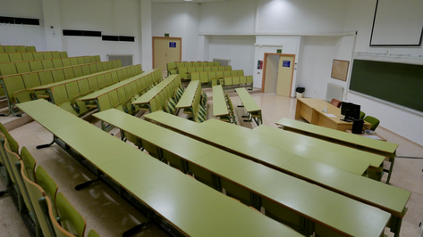
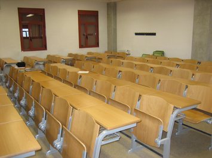
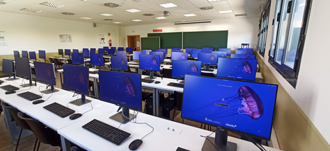
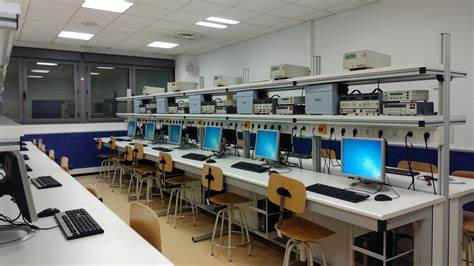

Aula localicada en la planta baja de la Facultad, ideal para impartir clases de teoría, charlas y examenes.
Capacidad: 80

Aula localicada en la primera planta de la Facultad, ideal para impartir clases de teoría, prácticas, charlas y examenes.
Capacidad: 50

Aula localicada en la segunda planta de la facultad, ideal para realizar prácticas de programación y diseño.
Capacidad: 30

Aula localicada en la tercera planta de la Facultad, ideal para clases relacionadas con la electrónica y circuitos.
Capacidad: 30
